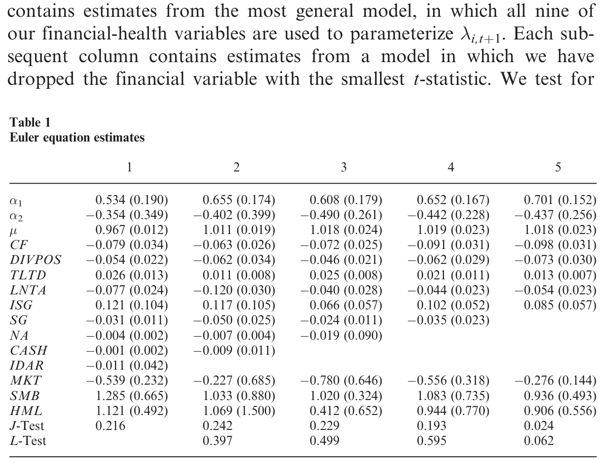
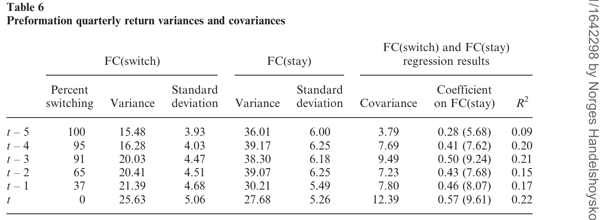
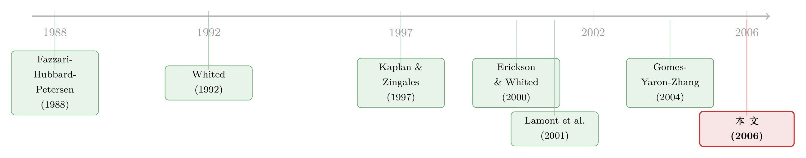

「借不到钱」是一种风险吗？——把融资约束从一道影子价格里解出来
本文读的是 Whited & Wu (2006, Review of Financial Studies)：两位作者没有沿用流行的 KZ 指数，而是从一个投资 Euler 方程出发、用广义矩估计 (generalized method of moments, GMM) 把「融资约束」这个看不见的影子价格反推出来，做成一个指数。结果是：受约束公司的股票收益会一起涨跌，存在一个「融资约束因子」；这个因子的年化溢价为 2.18%–2.76%、为正但不显著；而在横截面回归里，约束更紧的公司收益更高，并且这个效应盖过了规模效应——换句话说，所谓的「小公司溢价」，可能有一部分根本就是融资约束在作怪。
1 一个看似简单、却很难证伪的问题
先把问题摆在桌面上：一家「借不到钱」的公司，它的股票该不该给投资者更高的回报？
直觉上似乎应该。融资约束意味着公司想投资却拿不到外部资金，意味着它对宏观冲击更敏感、更容易在坏年景里被掐住脖子——这听起来像是一种实打实的风险。如果这种风险是系统性的、不可分散的，那么按照资产定价的基本逻辑，承担它的投资者就该被补偿，受约束公司的股票就该有更高的预期收益。
可问题在于，这件「直觉上应该成立」的事，在数据里却一直暧昧不清。在本文之前，最有名的一次尝试是 Lamont, Polk, and Saá-Requejo (2001)。他们借用 Kaplan and Zingales (1997)（下称 KZ）的回归系数，把一大批公司打上「融资约束分数」，发现受约束公司的股票收益确实会一起动——这说明它们身上有共同的冲击；但奇怪的是，由这个共同冲击构造出来的因子，赚不到风险溢价，对资产定价的解释力也很弱。几乎在同一时间，Gomes, Yaron, and Zhang (2004) 用一个加入了外部融资成本的生产型资产定价模型，也只找到「融资摩擦是定价风险」的微弱证据（关于这条线，可参见《融资约束，为什么偏偏在好年景里更咬人？》）。
于是局面变成了这样：理论上「借不到钱是一种风险」很顺，实证上却怎么也抓不住那笔溢价。
这时候，一个自然的问题冒了出来——会不会，根本不是「融资约束不被定价」，而是我们手里的尺子量错了东西？
2 尺子的问题：KZ 指数到底在测什么
要理解本文为什么要另起炉灶，得先看清 KZ 指数的来历。
Kaplan and Zingales (1997) 做的事是：翻阅 Fazzari, Hubbard, and Petersen (1988) 里被归为「受约束」的 49 家公司的年报，凭这些信息把每家公司在 1 到 4 的「融资约束量表」上打个分，再拿 1970–1984 这段时间这 49 家公司的数据，把分数对一组可观测的公司特征做一个有序 logit 回归。Lamont 等人后来用的，就是这把回归系数。
麻烦就出在这里。用 49 家公司、1970–1984 一个窗口估出来的系数，硬套到一个跨度大得多、年代也不同的样本上，参数在公司之间、时间上是否稳定，本身就是个大大的问号。更糟的是，KZ 指数里有一个变量是 Tobin's q——而 Erickson and Whited (2000) 早就指出，q 作为投资机会的代理变量含有大量测量误差，会让基于「投资对 q 和现金流回归」的那套传统识别（即 Fazzari-Hubbard-Petersen 范式）变得几乎不可解读。
所以本文的态度很明确：与其继续在一把可能量错了的尺子上做文章，不如自己造一把尺子，而且要让这把尺子从一开始就和「融资约束公司应有的特征」对得上。
但「融资约束」这东西的尴尬之处在于——它本质上是一个影子价格，是约束紧不紧的那个拉格朗日乘子，谁也没法在财报里直接读到。你怎么去测一个看不见的东西？
这就是本文真正关键的一步：用一个结构化的投资模型，把这个影子价格从公司的投资行为里反解出来。
3 模型：把「借钱难」写进投资的一阶条件
本文的模型沿用 Whited (1992, 1998) 的标准跨期投资框架。公司是价格接受者，目标是最大化未来股利的期望贴现值：
$$V_{i0} = E_{i0}\sum_{t=0}^{\infty} M_{0,t}\, d_{it}$$
这里 \(M_{0,t}\) 是从 0 期到 \(t\) 期的随机贴现因子，\(d_{it}\) 是股利。最大化要服从两个恒等式。第一个定义股利：
$$d_{it} = \pi(K_{it},\nu_{it}) - C(I_{it},K_{it}) - I_{it} + B_{i,t+1} - (1+r_t)B_{it}$$
其中 \(\pi\) 是利润函数，\(C\) 是投资的调整成本，\(I_{it}\) 是投资，\(B_{it}\) 是期初债务，\(\nu_{it}\) 是利润函数上服从马尔可夫过程的冲击。第二个是资本积累方程：
$$K_{i,t+1} = I_{it} + (1-\delta_i)K_{it}$$
到这里都还是教科书。真正把「融资约束」装进模型的，是下面两条约束：
$$d_{it} \ge \underline{d}_{it}, \qquad B_{i,t+1} \le \overline{B}_{i,t+1}$$
第一条限制了外部股权融资（因为模型不允许发新股，股利的下限就等价于股权融资的上限——一个负的 \(\underline{d}_{it}\) 就相当于允许发新股）；第二条限制了债务。这两条约束的上下限都是经济学家观测不到的，可以理解成一个信息不对称的外部融资模型最后留下的「壳」。
接着，一个自然的动作是：给第一条约束配一个拉格朗日乘子 \(\lambda_{it}\)。这个 \(\lambda_{it}\) 就是融资约束的灵魂——它是公司多筹一块钱外部（股权）资金的影子成本。约束越紧，\(\lambda_{it}\) 越大。对资本 \(K_{it}\) 求一阶条件，得到 Euler 方程：
这个方程读起来其实很朴素：右边是今天就掏钱投资的边际成本；左边是把这笔投资推到明天的期望贴现成本。最优投资要求公司在「今天投」和「明天投」之间无差异。
而融资约束的全部痕迹，都浓缩在那个相对影子成本项里：
$$L_{i,t+1} \equiv \frac{1+\lambda_{i,t+1}}{1+\lambda_{it}}$$
注意这里有一个极其漂亮、也极其关键的含义：没有融资约束时，\(L_{i,t+1}=1\)，融资约束在 Euler 方程里完全消失。 只有当约束随时间变化（即 \(\lambda_{i,t+1}\neq\lambda_{it}\)）时，\(L\) 才偏离 1、才会影响投资。换句话说——
融资约束要想影响今天的投资决策，它必须是时变的。重要的不是「今天约束有多紧」，而是「今天相对于明天，约束紧了还是松了」。这一点 Gomes, Yaron, and Zhang (2004) 也强调过。一个永远固定不变、哪怕很紧的约束，早就被吸收进了最优的投资水平里，对「现在投还是推迟投」毫无边际影响。
至于债务那条约束的乘子 \(g_{it}\)，由于债务在利润函数里是可分的，它不改变 Euler 方程(5)的基本形式；而且两个影子价格都受同一组可观测变量驱动、难以分开识别。所以作者干脆只锁定股权约束的 \(\lambda_{it}\)，把它作为融资约束的代表。
4 估计：把看不见的 λ 落到九个可观测变量上
模型写好了，但 \(\lambda_{i,t+1}\) 仍然是看不见的。怎么办？
本文走的是 Whited (1992)、Hubbard-Kashyap-Whited (1995)、Love (2003) 一脉的老办法：把这个影子价格设成一组可观测公司特征的线性函数，然后用 GMM 把这个函数的系数估出来。这一步是整篇文章的枢纽，因为这个被估出来的拟合值，就是最终的融资约束指数：
$$\lambda_{i,t+1} = b_0 + b_1 TLTD + b_2 DIVPOS + b_3 SG + b_4 LNTA + b_5 ISG + b_6 CASH + b_7 CF + b_8 NA + b_9 IDAR$$
这九个变量的选择本身就藏着作者的良苦用心，每一个都对应着「受约束公司应该长什么样」的经济直觉：
TLTD（长期债务/总资产）与IDAR（行业债务/资产比）一起放进来，是想刻画「受约束公司往往自己负债高、却又身处低负债容量的行业」；SG（公司销售增长）与ISG（行业销售增长）配合，是要识别「身处高增长行业、但自身增速低」的公司——只有真正有好投资机会、却受限于资金的公司，才会被约束咬到；NA（跟踪该公司的分析师数量）是信息不对称的指标；CF、CASH、DIVPOS、LNTA则是财务健康度的指标。
这里有一个容易被忽略、但作者特意强调的设计：他们故意没有只放公司规模 LNTA。因为如果指数主要由规模驱动，那它「测出来的融资约束」其实只是规模效应的影子，后面再说「融资约束被定价」就成了循环论证。同样，他们也拒绝把 Tobin's q 放进去——理由正是 Erickson and Whited (2000) 那个测量误差问题。这把尺子从设计上就在和「规模」「q」划清界限。
估计上还有几个值得一提的硬功夫：模型用一阶差分消掉公司固定效应（因此工具变量要用滞后到 \(t-2\) 的变量）；随机贴现因子 \(M_{t,t+1}\) 被设成 Fama and French (1993) 三因子的线性组合
$$M_{t,t+1} = \lambda_0 + \lambda_1 MKT_{t+1} + \lambda_2 SMB_{t+1} + \lambda_3 HML_{t+1}$$
——这一步很要紧：因为传统风险因子已经写进了贴现率，最后构造出的指数就不太可能只是这些老因子的换皮。调整成本函数用 Whited (1998) 的弹性形式，用 Newey and West (1987) 的检验确定截断阶数，最终定在 \(M=3\)。约束 \(E(\lambda_{i,t+1})\ge 0\)（影子价格非负）也被作为不等式约束加进了 GMM 目标函数。
数据是季度的 2002 年版 S&P COMPUSTAT 工业文件，剔除受监管与金融类公司、各种编码错误与重大并购后，得到一个 131 到 1390 家公司不等的非平衡面板，样本期 1975 年 1 月 到 2001 年 4 月。
估计结果见表 1。最一般的设定（第 1 列）里九个财务变量全上，之后每一列剔除 t 值最小的那个。值得看的是符号与量级都很合理：成本加成参数 \(\mu\)（表中 \(\gamma\)）落在 0.967–1.018 之间，紧贴 1；现金流 CF 的系数显著为负（第 1 列 −0.079，标准误 0.034），意味着现金流越充裕、影子成本越低；负债 TLTD 系数为正（0.026，标准误 0.013），负债越高约束越紧；规模 LNTA 系数显著为负（−0.077，标准误 0.024），大公司更不受约束——全都符合「受约束公司」的画像。更重要的是，模型的过度识别约束没有被拒绝，说明这套结构对得上数据。

Table 1: presents our Euler-equation estimation results. Column (1)
5 反转：这把尺子量出来的约束，真的被定价了
到此为止，作者只是造了一把更讲究的尺子。但真正的反转，是用这把尺子去看股票收益时发生的。
他们的检验从两个角度展开。
时间序列那一面：按规模和融资约束双重排序构造组合，仿照 Fama and French (1993, 1995) 的做法构造一个「融资约束因子」。结果是——受约束公司的收益确实正向共动，存在与融资约束相关的共同变异；这个因子赚到了一笔年化 2.18%–2.76% 的正风险溢价；并且这个因子的累积收益是逆周期的：它的累积收益要么与衰退同步、要么领先于衰退，在扩张期则急剧下滑。更关键的是，这个因子里有相当一部分变异，Fama-French 三因子加动量因子都解释不了。
但请注意——那笔 2.18%–2.76% 的溢价，在统计上并不显著。如果故事到这里就停，结论几乎和 Lamont 等人一样令人沮丧：共动有了，溢价却抓不牢。
于是真正决定胜负的，是横截面那一面。
当作者把个股收益对融资约束指数、以及其他公司特征做横截面回归时，融资约束指数的平均系数为正、且统计显著：约束更紧的公司，确实赚到了更高的收益。而最漂亮的一击在于——一旦控制了融资约束，小公司就不再赚取更高的收益了。

Table 6: summarizes the results for the two portfolios, FC(switch) and
这是什么意思？这意味着那个困扰了金融学几十年的「规模效应」（Chan and Chen, 1991；Chan, Chen, and Hsieh, 1985），有相当一部分根本不是「小」本身在定价，而是「小公司更容易受融资约束」在定价。融资约束效应不仅独立存在，还盖过了规模效应——或者更准确地说，它解释了规模效应的一部分。
绕了一大圈，故事终于落地：之前抓不住融资约束溢价，很可能不是因为这种风险不被定价，而是因为旧的尺子（KZ 指数）测不准；换一把从结构模型里解出来的、和约束特征对得上的尺子，溢价就在横截面里显形了。
6 它和「财务困境」不是一回事
读到这里，一个聪明的读者多半会皱眉：这跟「财务困境 (financial distress)」有什么区别？毕竟关于困境风险能不能解释 book-to-market 因子的文献已经汗牛充栋（Fama and French, 1995；Chen and Zhang, 1998；Dichev, 1998；Griffin and Lemmon, 2002）。
作者的区分很形象：想象一家濒临破产的公司和一家想快速成长、却因为缺钱而被迫放慢脚步的年轻公司之间的差别。前者是困境，后者是约束。本文样本设计也刻意把困境公司挡在门外——它只保留那些「至少有连续八个季度完整数据、且从未有超过两个季度负销售增长」的公司，为的就是看受外部融资约束、而非陷入财务困境的公司。也正因如此，本文发现融资约束解释的是规模因子的一部分，而不是 book-to-market 因子——这恰好和困境风险文献形成了互补而非重叠。
这条线和宏观文献也能接上：Bernanke and Gertler (1989)、Kiyotaki and Moore (1997) 等理论指出，在信息不对称下，抵押品价值限制了公司能借多少；Gertler and Gilchrist (1994)、Bernanke, Gertler, and Gilchrist (1996) 则在数据里发现，小公司在宏观逆风中收缩得更猛、更早。融资约束既然能左右宏观行为，它能进入资产收益也就不那么意外了。
7 文献脉络
把这条线捋一捋，它的演进其实很清楚。
起点是 Fazzari, Hubbard, and Petersen (1988)：他们用「投资对现金流的敏感度」来识别融资约束，开创了整个范式。但这个范式很快遭到 Kaplan and Zingales (1997) 的正面质疑——他们重新审视那 49 家「受约束」公司，造出了著名的 KZ 量表。Lamont, Polk, and Saá-Requejo (2001) 第一个把 KZ 系数搬进资产定价，发现了共动却找不到溢价。
与此同时，方法论的地基在松动：Erickson and Whited (2000) 证明 Tobin's q 测量误差严重，让传统的投资-q-现金流回归变得不可信。这就把研究逼向了结构估计这条路——Whited (1992, 1998) 一脉用 Euler 方程识别约束，Gomes, Yaron, and Zhang (2004) 用结构化的生产型资产定价模型重做了「融资摩擦是否被定价」这个问题。

本文正好站在这两条河的交汇处：像 Lamont 等人那样用一个约束指数给公司分组，又像 Gomes 等人那样用结构模型来构造这个指数——但它两边都不照搬，而是自己从 Euler 方程里解出 \(\lambda\)，造了一把新尺子。它的贡献，与其说是「发现了一个新因子」，不如说是用一把更可信的尺子，把一个本来暧昧不清的结论给夯实了。
8 评论与延伸（Q&A + 研究方向）
(a) 几个可能的疑问
Q：这把指数会不会只是把 Fama-French 三因子换了个名字？
不太会，这是作者特意防住的一手。随机贴现因子 \(M_{t,t+1}\) 本身就被设成了 MKT、SMB、HML 三因子的线性组合，写进了估计方程；所以指数里剩下的、能解释收益的部分，按构造就不应该只是这三因子的影子。事实上他们发现因子里相当一部分变异连三因子加动量都解释不了。
Q：年化 2.18%–2.76% 的溢价不显著，凭什么还说融资约束被定价了？
关键证据不在时间序列的因子溢价，而在横截面回归——那里融资约束指数的平均系数为正且显著，并且能吸收掉规模效应。时间序列因子不显著、横截面却显著，这种「分组组合 vs. 横截面回归」的张力在实证资产定价里并不少见，作者把结论的重心放在了后者。
Q：把 \(\lambda\) 设成九个变量的线性函数，会不会太武断？
这是结构估计里典型的「为了识别不得不付出的代价」。好处是过度识别约束没被拒绝、变量符号都合经济直觉、且模型刻意避开了规模与 q；坏处是结论确实依赖这个线性设定与变量选择。换一组变量或换个函数形式，指数会不会变，是悬在头上的问号。
Q：为什么强调融资约束必须「时变」才会被定价？
因为在马尔可夫结构下，Euler 方程管的是「今天投还是明天投」。一个永久固定的约束早被算进了最优投资水平，对边际的「投/缓」决策没有影响；只有 \(\lambda\) 在 \(t\) 与 \(t+1\) 之间发生变化，相对影子成本 \(L\) 才偏离 1。这也意味着，本文捕捉的是约束的动态，而非静态的「松紧水平」。
Q：它和 Gomes, Yaron, and Zhang (2004) 结论相反吗？
不算正面冲突，更像「同一问题、不同尺子、不同侧重」。GYZ 用总量数据和生产型模型，找到融资摩擦定价的证据有限；本文用公司层面的 Euler 方程构造个体指数，在横截面里找到了显著效应。差别很可能来自识别层面——个体层面的横截面变异，比总量时间序列更有力量。
Q：为什么是规模效应、而不是价值效应被融资约束解释？
这与样本设计直接相关。作者把陷入财务困境的公司剔除在外，留下的是「有机会却缺钱」的公司——这类公司更接近「小而年轻」，所以约束自然咬住的是规模维度。困境风险文献关心的 book-to-market，反而被有意避开了。
(b) 几个可能的研究问题与提案
1. 把这把尺子搬到公司债市场。 【经济故事】融资约束在股票里被定价，那在信用利差里呢？受约束公司理应有更高的违约风险与更陡的利差，而且约束的时变性应该在信用周期里被放大。【可行性】中。需要把 WW 式 Euler 指数与 TRACE/Mergent FISD 的债券层面数据合并，识别上可借鉴信用利差分解；难点在于受约束公司往往债券发行少、流动性差，样本可能偏。
2. 外资持有人会缓解还是放大融资约束溢价？ 【经济故事】如果外国机构投资者带来了额外的外部资金供给，受约束公司一旦被纳入「可投资」范围，其影子成本 \(\lambda\) 是否会下降、融资约束溢价是否随之收窄？这能把本文的影子价格和资本流动文献接起来。【可行性】中。需要 FactSet/13F 的持股数据与一个外资准入的外生冲击（如纳入 MSCI、QFII 额度变动）；识别可走断点或 DiD。
3. 融资约束指数的流动性维度。 【经济故事】受约束公司在坏年景被掐脖子，往往也是其股票/债券流动性最差的时候——约束溢价里有多少其实是流动性溢价？把两者拆开很有意思。【可行性】中偏高。股票端有现成流动性指标；难点是干净地把「融资约束」与「流动性」这两个高度相关的影子价格分离，需要一个只动其中之一的工具。
4. 用结构指数复检「规模效应是否已消失」。 【经济故事】近二十年规模效应在很多市场里减弱甚至消失。如果规模效应的内核是融资约束，那么随着资本市场更发达、约束普遍缓解，规模效应的衰减就应该和融资约束溢价的衰减同步。【可行性】高。本文方法可直接延展到 2001 年之后的样本，做一个时间序列上的对照检验，数据与方法都现成。
5. 把 KZ、WW、SA 几把尺子放在同一张横截面里对质。 【经济故事】文献里测融资约束的指数不止一把（KZ、本文的 WW、以及后来的 size-age 指数）。它们到底在测同一个东西吗？谁的定价含量最高？【可行性】高。纯实证、数据现成，是一个干净的「指数擂台」。
参考文献
- Bernanke, B., and M. Gertler (1989). Agency Costs, Net Worth, and Business Fluctuations. American Economic Review 79, 14–31.
- Chan, K. C., and N. Chen (1991). Structural and Return Characteristics of Small and Large Firms. Journal of Finance 46, 1467–1484.
- Erickson, T., and T. M. Whited (2000). Measurement Error and the Relationship Between Investment and q. Journal of Political Economy 108, 1027–1057.
- Fama, E. F., and K. R. French (1993). Common Risk Factors in the Returns on Stocks and Bonds. Journal of Financial Economics 33, 3–56.
- Fama, E. F., and K. R. French (1995). Size and Book-to-Market Factors in Earnings and Returns. Journal of Business 73, 161–175.
- Fazzari, S., R. G. Hubbard, and B. C. Petersen (1988). Financing Constraints and Corporate Investment. Brookings Papers on Economic Activity 1, 141–195.
- Gertler, M., and S. Gilchrist (1994). Monetary Policy, Business Cycles, and the Behavior of Small Manufacturing Firms. Quarterly Journal of Economics 109, 309–340.
- Gomes, J. F., A. Yaron, and L. Zhang (2004). Asset Pricing Implications of Firms' Financing Constraints. Working paper, University of Pennsylvania.
- Hubbard, R. G., A. K. Kashyap, and T. M. Whited (1995). Internal Finance and Firm Level Investment. Journal of Money, Credit, and Banking 27, 683–701.
- Kaplan, S., and L. Zingales (1997). Do Financing Constraints Explain Why Investment is Correlated with Cash Flow? Quarterly Journal of Economics 112, 169–216.
- Kiyotaki, N., and J. Moore (1997). Credit Cycles. Journal of Political Economy 105, 211–248.
- Lamont, O., C. Polk, and J. Saá-Requejo (2001). Financial Constraints and Stock Returns. Review of Financial Studies 14, 529–544.
- Love, I. (2003). Financial Development and Financing Constraints: International Evidence from the Structural Investment Model. Review of Financial Studies 16, 765–791.
- Newey, W., and K. West (1987). Hypothesis Testing with Efficient Method of Moments Estimation. International Economic Review 28, 777–787.
- Whited, T. M. (1992). Debt, Liquidity Constraints, and Corporate Investment: Evidence from Panel Data. Journal of Finance 47, 1425–1460.
- Whited, T. M. (1998). Why do Investment Euler Equations Fail? Journal of Business and Economic Statistics 16, 469–478.